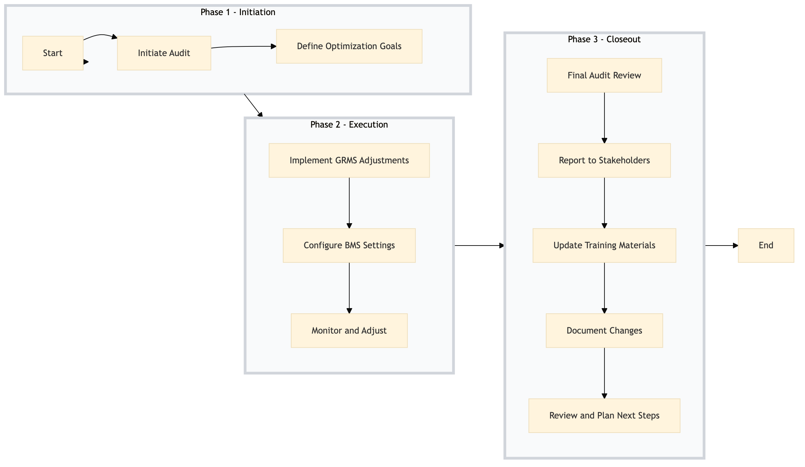

| Role | Steps |
|---|---|
| Facilities Manager | 1.1 3.1 3.2 3.4 3.5 |
| Energy Manager | 1.2 2.1 2.2 2.3 3.1 |
| Building Engineer | 2.1 2.2 2.3 3.3 |
| Step | Name | Role | System | Input | Output | KPI | Dec? | Exc? | Pain Point / Risk |
|---|---|---|---|---|---|---|---|---|---|
| 1.1 | Initiate Audit | Facilities Manager | Oracle OPERA Cloud | Annual energy consumption report | Audit report with identified inefficiencies | Completion within 2 weeks | N | Y | Accurate data collection and analysis for the audit. |
| 1.2 | Define Optimization Goals | Energy Manager | Oracle OPERA Cloud, IDeaS G3 RMS | Audit report | Optimization goals and action plan | Within 1 week | N | Y | Balancing operational needs with energy savings. |
| 2.1 | Implement GRMS Adjustments | Building Engineer | Oracle OPERA Cloud, Honeywell INNCOM | Optimization goals and action plan | Updated GRMS settings | Less than 5 days | Y | N | Ensuring guest comfort while optimizing energy use. |
| 2.2 | Configure BMS Settings | Building Engineer | Schneider EcoStruxure, Oracle OPERA Cloud | Optimization goals and action plan | Configured BMS settings | Less than 5 days | Y | N | Maintaining building systems without disrupting operations. |
| 2.3 | Monitor and Adjust | Facilities Manager, Energy Manager | Oracle OPERA Cloud, Microsoft Power BI | Real-time data from GRMS and BMS | Continuous monitoring report | Daily review within 1 hour | Y | N | Balancing energy savings with guest comfort. |
| 3.1 | Final Audit Review | Facilities Manager, Energy Manager | Oracle OPERA Cloud, IDeaS G3 RMS | Continuous monitoring report | Final audit review and optimization report | Within 1 week | N | Y | Ensuring all goals are met before finalizing. |
| 3.2 | Report to Stakeholders | General Manager, Facilities Manager | Oracle OPERA Cloud, IDeaS G3 RMS | Final audit review and optimization report | Stakeholder presentation | Within 1 day | N | Y | Communicating complex data to non-technical stakeholders. |
| 3.3 | Update Training Materials | Facilities Manager, Building Engineer | Oracle OPERA Cloud, Knowcross HotSOS | Optimization goals and action plan | Updated training materials | Within 1 week | N | Y | Ensuring all staff are trained on new systems. |
| 3.4 | Document Changes | Facilities Manager, Building Engineer | Oracle OPERA Cloud, IDeaS G3 RMS | Optimization goals and action plan | Change documentation | Within 1 week | N | Y | Comprehensive documentation for future reference. |
| 3.5 | Review and Plan Next Steps | General Manager, Facilities Manager | Oracle OPERA Cloud, IDeaS G3 RMS | Final audit review and optimization report | Next steps plan | Within 1 week | N | Y | Planning for continuous improvement. |
Optimizing Guest Room Management System (GRMS) and Building Management System (BMS) to enhance energy efficiency and guest comfort at a Marriott full-service hotel.